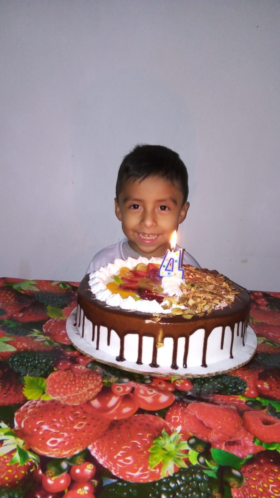
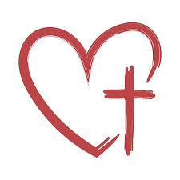

Una que mas recuerdo fue el día de ir a realizar mis exámenes de recuperación a finales del 2021, no dormí nada por intentar estudiar y el sentirme frustrado de que pude haber puesto mas de mi parte antes fue algo que no me perdone, a la hora de despedirme de mi mamá ella me dijo, anda a la iglesia está abierta y pedile a Dios que te ayude y veras que pasaras, en mi estaba esa pena de ir y sentarme solo, pero mi corazón decía lo contrario, le pedí que me diera la sabiduría que necesitaba, aunque nunca me notificaron los resultados y no pude tener mi graduación de nivel diversificado, entendí de que Dios es grande y siempre nos escucha aunque para eso uno tenga que sufrir un poco.
La segunda es el nacimiento de mi hermano, cuando me dijeron eso yo no pensaba con el corazón además de ser un niño tonto yo únicamente crecí con mi hermana, y nunca me hice la idea de tener a un hermanito, pase un par de semanas así y lo deje pasar , cuando mi mamá se fue me toco cuidar a mi hermana, recuerdo el día que lo vi la primera vez , nunca sentí el amor hacia alguien en un ratito, me agarro el dedo tan fuerte que el pensamiento de no quererlo me hizo un nudo en la garganta, desde ese primer día que lo vi, nunca eh dejado de pensar en su bien, daría mi vida por el y todo lo que necesite por ese amigo de ya 9 años que tengo

Creo otra que sin duda es muy relevante en mi vida es acercarme a Dios, por 2021 – 2022 cuando fui a la iglesia y hable con el, sentía que no lo tenia que hacer solo cuando lo necesitara, tenia que hacerlo siempre, y empecé a pedirle a Dios sabiduría y entendimiento con mi vida y mis planes, así lo hice diario hasta que en 2023 sentía que por más que pedía no llegaba nada, la “decepción” llego y me aleje poco a poco, ya no hablaba con el, mi fe que con tantas cosas que tenía y había forjado, las perdí, perdí las ganas de tener sueños y metas , hasta que observe que mucha gente que por mas de que la pasaban peores cosas que uno, la fe y el agradecimiento no desaparecían y poco a poco fui encontrando que hacer con mi vida, no rendirme , hacerme valer y ser autosuficiente, volví a hablar con el, volví a pedir la sabiduría que algún día llegue a tener y agradecer por todo lo bueno y malo.
